2026 年 10 月整理：失效的網址已更新，更新不了的已移除（說明）。
 洪惟仁教授網站
洪惟仁教授網站
台灣語文工作者 洪惟仁教授https://uijin.idv.tw/
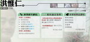
洪惟仁教授主持網站
民間歌謠教學研究網https://uijin.idv.tw/song/
僑務委員會台語教材（現為「臺灣台語學習網」）https://www.huayuworld.org/taiwanese_learning_online_resource.php
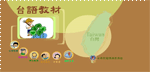
客家文化研究網站
國立聯合大學 客家研究學院（原全球客家研究中心）https://hakka.nuu.edu.tw/
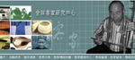
台灣語文相關學系
國立東華大學 民族語言與傳播學系https://lci.ndhu.edu.tw/
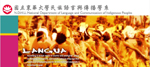
真理大學 台灣文學系https://tl.au.edu.tw/
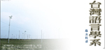
國立臺中教育大學 臺灣語文學系https://taiwanese.ntcu.edu.tw/
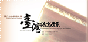
國立高雄師範大學 臺灣歷史文化及語言研究所（原台灣語言及教學研究所）https://c.nknu.edu.tw/tni/
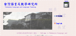
國立清華大學 臺灣語言研究與教學研究所（原新竹教育大學）https://gitll.site.nthu.edu.tw/
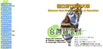
國立聯合大學 臺灣語文與傳播學系https://tlc.nuu.edu.tw/
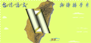
教育相關網站
教育部全球資訊網https://www.edu.tw/
國民中小學課程與教學資源整合平臺 CIRN（原國教專業社群網）https://cirn.k12ea.gov.tw/
推薦主題網站
中教大台語系量詞網站（原站已下線）https://uijin.idv.tw/study/
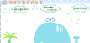
內政部地名資訊服務網（原地名檢索系統）https://gn.moi.gov.tw/
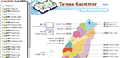
台語摘譯台日大辭典查詢https://taigi.fhl.net/dict/
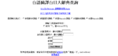
教育部語文成果入口網（原國語會網站）https://language.moe.gov.tw/